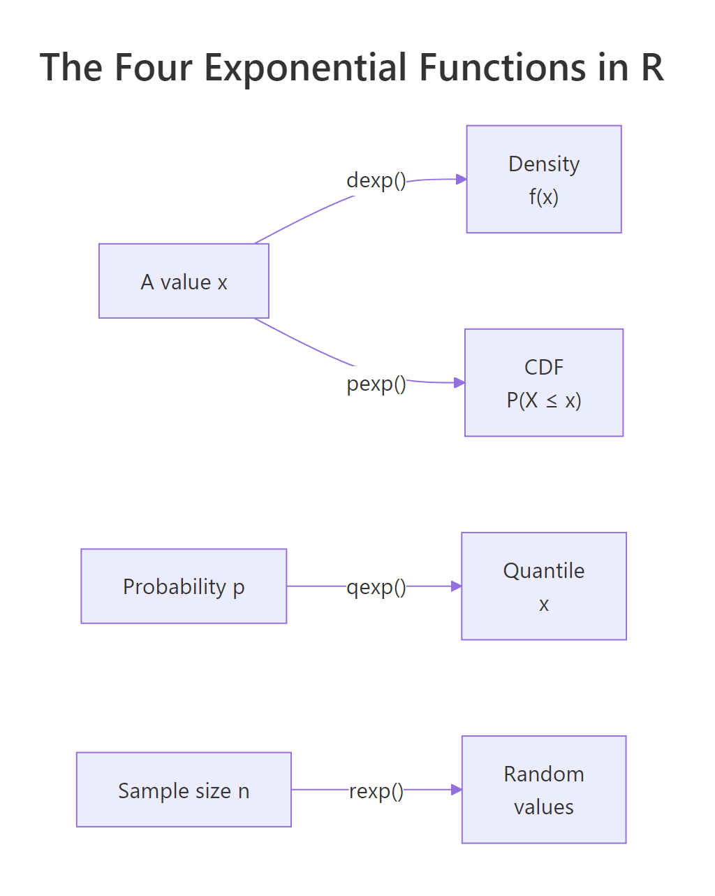
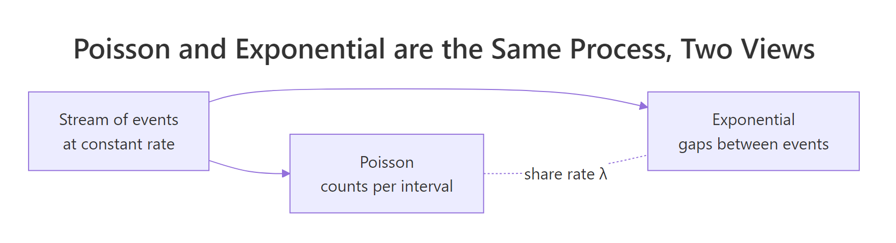

The Exponential Distribution in R: Memoryless Property & Survival Link
The exponential distribution in R models the time between random events that happen at a constant average rate — customer arrivals, machine failures, radioactive decays. You use four base-R functions: dexp() for the density, pexp() for the CDF, qexp() for quantiles, and rexp() to draw random samples. Its defining trick is the memoryless property: the distribution of what's still to come doesn't depend on how long you've already been waiting.
Why do I keep waiting the same 10 minutes no matter how long I've already waited?
Picture a bus stop where buses arrive at a constant average rate, one every 10 minutes, but at random times. You arrive and wait. Ten minutes pass — no bus. A stranger walks up. How much longer should each of you expect to wait?
Intuition screams that you should wait less; you've already paid ten minutes. But under the exponential distribution, you and the stranger face the same expected wait. The past doesn't shorten your future. Let's show it in three lines of R.
Both means hug 10. The people who've already waited past 10 minutes face, on average, another 10 minutes of waiting — the same expectation as someone who just arrived. That's the memoryless property, not as a theorem but as a number you just computed.
s, the additional time is distributed identically to a fresh wait from zero. Among continuous distributions on the positive real line, only the exponential has this property.Try it: Using the same waits vector, compute the mean remaining wait among draws that have already exceeded 20 minutes. Store it in ex_remaining.
Click to reveal solution
Explanation: Filter to draws past 20, subtract 20 to get the remaining time, take the mean. Same answer as at t=10 — the distribution's memory resets at every point.
What are the four exponential functions in R?
R exposes the exponential through the standard four-letter family: dexp, pexp, qexp, rexp. The single parameter is rate (often written λ). Given rate, the mean is 1/rate and the variance is 1/rate^2. Everything else follows.
Here's one block that demonstrates all four with rate = 0.1, matching our 10-minute bus scenario.
Read the outputs as a story about waits: the density at 5 minutes is 0.06 (useful as a relative height, not a probability); there's a 78% chance your bus shows up within 15 minutes; 90% of bus waits are shorter than 23 minutes; and three simulated rides would have taken 8.3, 17.9, and 2.9 minutes. The same four-function pattern applies to every distribution in base R — normal (dnorm/pnorm/...), Poisson, Binomial — so once this clicks for exponential, the others come free.

Figure 1: The four exponential functions in R and what each one returns.
Try it: Compute the probability a wait exceeds 15 minutes when rate = 0.1. Store it in ex_prob.
Click to reveal solution
Explanation: pexp(q) returns P(X ≤ q); P(X > q) is the complement. lower.tail = FALSE returns it directly without the 1 - subtraction.
Is rate the same as mean? (No — and this trips people up)
The exponential has exactly one parameter, but people disagree about what to call it. R calls it rate. Some textbooks parameterize by scale or mean. They are reciprocals:
$$\text{rate} = \frac{1}{\text{mean}}$$
If average wait is 30 minutes, rate is 1/30 ≈ 0.033. Passing 30 as the rate to rexp() produces waits with a mean of 1/30 — hundredths of a minute, not half-hour buses. It's a silent bug; the function returns numbers, they just mean something else.
The bad vector has values in hundredths of a minute. The good vector scatters around 30, as it should. Whenever a problem gives you a mean, your first line should be rate <- 1 / mean — not rate <- mean.
rate silently returns the wrong distribution. R won't warn you. Values still look like waits, just scaled by a factor of mean squared. Always compute rate = 1 / mean before calling any *exp() function when the problem is stated in mean form.Try it: Suppose the mean wait between phone calls is 8 minutes. Draw 5 simulated waits into ex_waits.
Click to reveal solution
Explanation: Convert mean to rate first (1/8), then pass it to rexp(). The values scatter around 8, as expected.
How do I prove the memoryless property with a simulation?
Section 1 gave you the intuition; now let's nail it down. The memoryless property says:
$$P(X > s + t \mid X > s) = P(X > t) \quad \text{for all } s, t \geq 0$$
Where:
- $X$ = the exponential wait time
- $s$ = time already elapsed without an event
- $t$ = additional time we're asking about
In plain language: given that you've already waited s, the chance of waiting at least another t equals the chance of waiting at least t from scratch. Let's check it empirically on our simulated waits.
Both sides agree to two decimal places. The conditional probability of waiting another 5 minutes given you've already waited 10 is identical to the probability a fresh arrival waits at least 5 minutes. Draw more samples and the gap shrinks — it's not luck, it's the distribution's structure.
rgeom()). Every other positive-support distribution — normal-truncated, gamma (unless shape=1), Weibull, log-normal — has memory: its conditional distribution depends on how long you've already waited.Try it: Check the memoryless property at s = 15 and t = 10 on the same waits vector. Store LHS and RHS.
Click to reveal solution
Explanation: LHS filters to draws past 15, then asks what fraction also exceeds 25 (i.e., 15 + 10). RHS asks the same question from zero at t=10. Both approximate exp(-0.1 * 10) ≈ 0.368.
How does the exponential link to survival analysis?
Survival analysis studies time-to-event: time to failure, time to death, time to churn. Its central object is the hazard function h(t) — the instantaneous failure rate at time t given survival up to t. For the exponential, something striking happens:
$$h(t) = \lambda \quad \text{(constant in } t \text{)}$$
The hazard is flat. An exponential component has the same chance of failing in the next second at age 1 day as it does at age 10 years. That's the survival-analysis restatement of memoryless: constant hazard and memoryless are the same fact in two languages.
Let's compute the empirical hazard from simulated failure times and plot it. A flat curve is the signature.
The solid line is the empirical hazard; the red dashed line is the true rate (0.1). The empirical curve dances around 0.1 and shows no trend up or down — that's what "constant hazard" looks like when you squint at noisy data. If the curve had climbed, you'd be looking at a Weibull with shape > 1 (aging parts). If it had fallen, shape < 1 (infant mortality). Flat means exponential.
Try it: Compute the probability a failure hasn't happened by t = 20 in two ways — theoretically with pexp() and empirically from fail_times. Store both.
Click to reveal solution
Explanation: The theoretical survival is 1 - CDF, which for exponential simplifies to exp(-rate * t). The empirical version just asks what fraction of simulated lifetimes exceeded 20. Both approximate exp(-2) ≈ 0.135.
How do I fit an exponential distribution to real data?
You have a sample of wait times and you want to know the rate. The maximum likelihood estimate has a clean closed form:
$$\hat{\lambda}_{MLE} = \frac{1}{\bar{x}} = \frac{n}{\sum_{i=1}^{n} x_i}$$
Where:
- $\hat{\lambda}_{MLE}$ = the MLE of the rate
- $\bar{x}$ = sample mean
- $n$ = number of observations
You just invert the sample mean. Let's verify it matches what a numerical optimiser finds when we hand it the log-likelihood by hand.
Both methods land on the same estimate, 0.2517, satisfyingly close to the true 0.25. With 500 observations we recover the rate to two decimal places; with 50 the estimate would be noisier. For quick-and-dirty fits on confirmed-exponential data, skip optim() entirely — 1 / mean(x) is the answer.
dweibull) or lognormal (dlnorm) instead. Fitting exponential to data with an increasing hazard gives you a rate that's "correct on average" and wrong everywhere else.Try it: Here is a vector ex_sample of 200 waits. Estimate the rate and store it in ex_rate.
Click to reveal solution
Explanation: For exponential, the MLE of rate is the reciprocal of the sample mean. No loops, no optimiser.
Practice Exercises
Exercise 1: Call-centre arrival modelling
Calls arrive at a support line at a mean rate of one every 3 minutes. Compute (a) the probability that the next call arrives within 1 minute and (b) the 95th-percentile wait. Simulate 1000 inter-call times into my_calls, report its mean, and compare to the theoretical mean.
Click to reveal solution
Explanation: About 28% of inter-call gaps are shorter than 1 minute. 95% of gaps are shorter than 9 minutes. The sample mean (2.98) sits right at the theoretical mean (3).
Exercise 2: Predictive interval for the next wait
You observe 50 inter-order times, my_waits. Fit an exponential (closed-form MLE), then compute a 95% predictive interval for the next wait using qexp() at 0.025 and 0.975. Store the rate estimate in my_rate, the interval bounds in pi_low and pi_high.
Click to reveal solution
Explanation: The rate estimate from 50 observations (0.171) is noisier than the true 0.15 — expected with a small sample. The predictive interval uses those quantiles of the fitted exponential; the lower bound is small because the exponential piles mass near zero.
Complete Example: Time Between E-commerce Orders
Let's put everything together. Suppose an online store wants to model the time between consecutive orders to predict short-term load. We'll simulate a realistic arrival stream, fit an exponential, and use it to answer a business question: what's the probability the next order arrives within 2 minutes?
The fitted rate (0.199) is essentially the truth (0.2). About 33% of inter-order gaps are shorter than 2 minutes, so an operations team planning capacity should expect roughly one in three gaps to be that short. The histogram with the fitted density overlaid shows the exponential pulling most of its mass toward zero — a reminder that short waits are common and long waits are rare, but not impossibly so.
Summary
The exponential distribution is the go-to model for time between random events happening at a constant rate. Its three defining properties:
- Memoryless. The remaining wait doesn't shrink with how long you've already waited. Prove it empirically with
mean(waits[waits > s] - s) == mean(waits). - rate = 1/mean. The single parameter is rate, not mean. Always compute
rate <- 1 / meanbefore using any*exp()function. - Constant hazard. The failure rate
h(t) = ratedoesn't change with age. This is memoryless in survival language. Plot the empirical hazard — if it's not flat, use Weibull instead.
| Function | Input | Returns |
|---|---|---|
dexp(x, rate) |
value x |
density f(x) |
pexp(q, rate) |
quantile q |
P(X ≤ q) |
qexp(p, rate) |
probability p |
value x such that P(X ≤ x) = p |
rexp(n, rate) |
sample size n |
n random values |
And one big-picture fact worth remembering:

Figure 2: The Poisson and exponential distributions describe the same process from two angles — counts of events per interval versus gaps between events.
If events arrive as a Poisson process with rate λ, the number of events per unit time is Poisson(λ) and the gaps between events are Exponential(λ). Same λ, two different questions.
References
- R Core Team — Exponential Distribution (stats package reference). Link
- Wickham, H. & Grolemund, G. — R for Data Science, 2nd ed. O'Reilly, 2023. Link
- James, G., Witten, D., Hastie, T., Tibshirani, R. — An Introduction to Statistical Learning, 2nd ed. Ch. 2. Link
- Ross, S. — Introduction to Probability Models, 12th ed. Ch. 5 (Exponential Distribution and Poisson Process). Academic Press, 2019.
- Klein, J.P. & Moeschberger, M.L. — Survival Analysis: Techniques for Censored and Truncated Data, 2nd ed. Springer, 2003. Ch. 2 (Basic Quantities and Models).
- NIST/SEMATECH — e-Handbook of Statistical Methods, section 1.3.6.6.7 Exponential distribution. Link
- Therneau, T. — survival package reference, CRAN. Link
Continue Learning
- Binomial and Poisson Distributions in R — the discrete counterparts; Poisson counts are the other face of the exponential-gaps coin.
- Fitting Distributions to Data in R — broader toolbox (
fitdistrplus, goodness-of-fit tests) for when exponential isn't the right choice. - Sampling Distributions in R — what happens when you take repeated samples from any distribution, including the exponential.